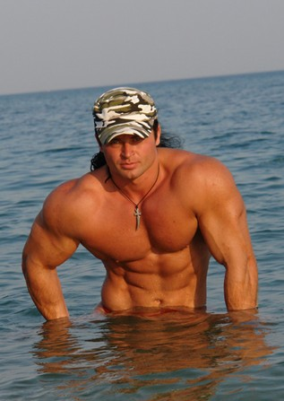

Как выбрать для себя тренировочную программу?
Привет, «подполье». Денис Борисов обещал вам необычную книжонцию которая добавит больше понимания в ваши головы. Что ж... раз обещал, значит нужно выполнять. Представляю вашему вниманию один простенький алгоритм подбора тренировочной программы для новичков.

Не судите строго, потому что цель сего труда была вовсе не в том, чтоб объяснить все возможные варианты тренировки или в том, чтоб, боже упаси, выбрать САМУЮ САМУЮ лучшую. Так не бывает в принципе.
Просто в какой то момент я понял, что почти ВСЕГДА тренера дают начинающим одну и ту же программу без строгого учета индивидуальных особенностей. Почему так? Да просто потому что никто до этого не пробовал строго систематизировать различные факторы влияющие на
выбор.
Поэтому, как то в один из теплых июньских вечеров, я решил попробовать это сделать и у меня получилась эта брошюрка. Она не подойдет опытным спортсменам. НО ее легко можно использовать начинающим.
Когда вы задумаете заняться своим телосложением в тренажерном зале, то одним из самых сложных вопросов для вас будет - выбор ПРАВИЛЬНОЙ тренировочной программы для подобных занятий.
Когда я говорю ПРАВИЛЬНОЙ, я имею введу такую тренировочную программу которая будет оптимальной именно для вас. Т.е. такой программы, которая приведет к максимально быстрому результату.
Все люди разные. Это является причиной огромного разнообразия тренировочных программ для занятий в тренажерном зале. Выбор оптимальной - задача не из простых, потому что нужно учитывать огромное количество параметров, разобраться в которых порой и опытному спортсмену не под силу. Поэтому я решил вам облегчить подобную задачу по максимуму.
С помощью этого приложения вы сможете подобрать эффективную программу именно для себя. Составляя алгоритм выбора, я учитывал прежде всего такие параметры, как ПОЛ, ВОЗРАСТ, ТРЕНИРОВАННОСТЬ и ГЕНЕТИКУ, потому что на мой взгляд, это основные четыре параметра, которыми нужно руководствоваться при выборе индивидуальной тренировочной программы.
Итак. Вы готовы? Тогда поехали!
Первый вопрос звучит так:
ВЫ МУЖЧИНА ИЛИ ЖЕНЩИНА?
Мужчина
Женщина
Кто такой Денис Борисов?
ОЦЕНИТЬ ПРИЛОЖЕНИЕ